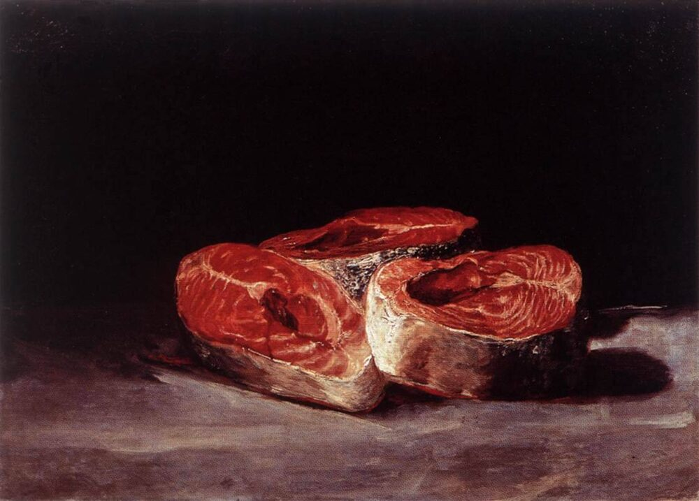

A2 · Food & Dining
Shopping for a Special Dinner
Three courses, one cart, and a list that does not survive the first aisle.
Reading
Play the audio and follow along, then read it again on your own. Tap or hover over a highlighted word to see what it means.
Cynthia wanted to cook something special. Her husband had started a new job that week, and she thought a good dinner was a better way to celebrate than a card.
She did not know yet what she was going to make. She had a rough idea — a salad, a main course and something sweet — but nothing more than that, so she went to the store to look for ideas.
She took a cart at the door and read her list again. It said: salad things, meat?, dessert. It was not a very good list.
She started with the vegetables. The tomatoes looked tired, so she chose spinach instead, and added an avocado, a cucumber and a lemon. Then she picked up some walnuts, because she remembered a salad with walnuts and cheese that she had eaten once and never made.
For the main course she stood in front of the meat counter for a long time. Chicken was the safe choice. Fish was better but harder. In the end she asked the man behind the counter what was good that day, and he said the salmon had come in that morning, so she bought salmon. She also took potatoes, garlic and butter.

Dessert was easy, because her husband only really likes one thing. She bought dark chocolate, cream, eggs and sugar, and decided she would make chocolate mousse. It takes twenty minutes and it always works.
At the checkout she looked in her cart and saw that she had spent more than she meant to. She usually does. Then she went home, put the shopping away, and started cutting the potatoes while the oven warmed up.
Her husband came home at seven. He smelled the fish and said, “What's the occasion?”, which she thought was a very silly question.
Key Vocabulary
- to celebrate to do something enjoyable because of a happy event
- rough idea a general plan without the details
- cart the metal basket on wheels you push around a store
- tired old and no longer fresh, said of fruit or vegetables
- walnut a hard-shelled nut often used in salads
- main course the biggest and most important dish of a meal
- counter the long table in a shop where you are served
- safe choice an option that is not exciting but will not go wrong
- to come in to arrive as a delivery
- checkout the place in a shop where you pay
- to put away to store things in their proper places
- oven the closed box you bake food in
- to warm up to become hot enough to use
- occasion a special event or reason
- silly foolish; not sensible
Shopping for a Special Dinner — A2 · Food & Dining · Renan the Teacher, English Language Academy · https://renangrossi.github.io/englishclasses/reading/a2/grocery-shopping.html
Interactive Exercises
Practice
Complete each exercise, then click Submit to see your score and an explanation for every answer.
Speaking & Writing
Discussion
There are no right answers here — use these to practice speaking, or write a short answer to each.
- Cynthia goes shopping without deciding what to cook. Do you plan your meals or decide in the shop?
- She always spends more than she means to. Why is that so common?
- What would you cook to celebrate good news? Name three things you would buy.
- Her husband did not understand why the dinner was special. Was that fair, or was she being hard on him?
- Write about 100 words about a meal you cooked for somebody, and say what you bought for it.